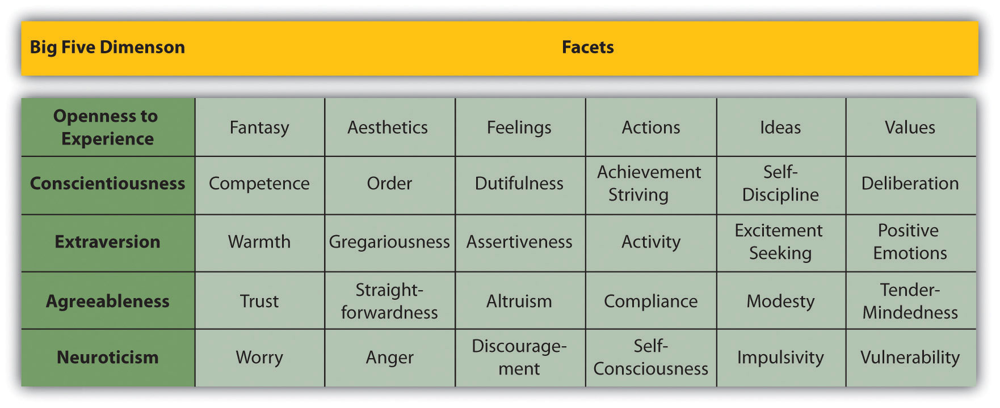

MeasurementThe assignment of scores to individuals so that the scores represent some characteristic of the individuals. is the assignment of scores to individuals so that the scores represent some characteristic of the individuals. This very general definition is consistent with the kinds of measurement that everyone is familiar with—for example, weighing oneself by stepping onto a bathroom scale, or checking the internal temperature of a roasting turkey by inserting a meat thermometer. It is also consistent with measurement throughout the sciences. In physics, for example, one might measure the potential energy of an object in Earth’s gravitational field by finding its mass and height (which of course requires measuring those variables) and then multiplying them together along with the gravitational acceleration of Earth (9.8 m/s2). The result of this procedure is a score that represents the object’s potential energy.
Of course this general definition of measurement is consistent with measurement in psychology too. (Psychological measurement is often referred to as psychometricsThe measurement of psychological variables and constructs..) Imagine, for example, that a cognitive psychologist wants to measure a person’s working memory capacity—his or her ability to hold in mind and think about several pieces of information all at the same time. To do this, she might use a backward digit span task, where she reads a list of two digits to the person and asks him or her to repeat them in reverse order. She then repeats this several times, increasing the length of the list by one digit each time, until the person makes an error. The length of the longest list for which the person responds correctly is the score and represents his or her working memory capacity. Or imagine a clinical psychologist who is interested in how depressed a person is. He administers the Beck Depression Inventory, which is a 21-item self-report questionnaire in which the person rates the extent to which he or she has felt sad, lost energy, and experienced other symptoms of depression over the past 2 weeks. The sum of these 21 ratings is the score and represents his or her current level of depression.
The important point here is that measurement does not require any particular instruments or procedures. It does not require placing individuals or objects on bathroom scales, holding rulers up to them, or inserting thermometers into them. What it does require is some systematic procedure for assigning scores to individuals or objects so that those scores represent the characteristic of interest.
Many variables studied by psychologists are straightforward and simple to measure. These include sex, age, height, weight, and birth order. You can almost always tell whether someone is male or female just by looking. You can ask people how old they are and be reasonably sure that they know and will tell you. Although people might not know or want to tell you how much they weigh, you can have them step onto a bathroom scale. Other variables studied by psychologists—perhaps the majority—are not so straightforward or simple to measure. We cannot accurately assess people’s level of intelligence by looking at them, and we certainly cannot put their self-esteem on a bathroom scale. These kinds of variables are called constructsA variable that cannot be observed directly because it represents a tendency to behave in certain ways or a complex pattern of behavior and internal processes. These include personality traits, emotional states, attitudes, and abilities. (pronounced CON-structs) and include personality traits (e.g., extroversion), emotional states (e.g., fear), attitudes (e.g., toward taxes), and abilities (e.g., athleticism).
Psychological constructs cannot be observed directly. One reason is that they often represent tendencies to think, feel, or act in certain ways. For example, to say that a particular college student is highly extroverted (see Note 5.6 "The Big Five") does not necessarily mean that she is behaving in an extroverted way right now. In fact, she might be sitting quietly by herself, reading a book. Instead, it means that she has a general tendency to behave in extroverted ways (talking, laughing, etc.) across a variety of situations. Another reason psychological constructs cannot be observed directly is that they often involve internal processes. Fear, for example, involves the activation of certain central and peripheral nervous system structures, along with certain kinds of thoughts, feelings, and behaviors—none of which is necessarily obvious to an outside observer. Notice also that neither extroversion nor fear “reduces to” any particular thought, feeling, act, or physiological structure or process. Instead, each is a kind of summary of a complex set of behaviors and internal processes.
The Big Five is a set of five broad dimensions that capture much of the variation in human personality. Each of the Big Five can even be defined in terms of six more specific constructs called “facets” (Costa & McCrae, 1992).Costa, P. T., Jr., & McCrae, R. R. (1992). Normal personality assessment in clinical practice: The NEO Personality Inventory. Psychological Assessment, 4, 5–13.
Figure 5.1 The Big Five Personality Dimensions
The conceptual definitionA description of a variable or construct in terms of the behaviors and internal processes that are involved, along with how that construct relates to other variables. of a psychological construct describes the behaviors and internal processes that make up that construct, along with how it relates to other variables. For example, a conceptual definition of neuroticism (another one of the Big Five) would be that it is people’s tendency to experience negative emotions such as anxiety, anger, and sadness across a variety of situations. This definition might also include that it has a strong genetic component, remains fairly stable over time, and is positively correlated with the tendency to experience pain and other physical symptoms.
Students sometimes wonder why, when researchers want to understand a construct like self-esteem or neuroticism, they do not simply look it up in the dictionary. One reason is that many scientific constructs do not have counterparts in everyday language (e.g., working memory capacity). More important, researchers are in the business of developing definitions that are more detailed and precise—and that more accurately describe the way the world is—than the informal definitions in the dictionary. As we will see, they do this by proposing conceptual definitions, testing them empirically, and revising them as necessary. Sometimes they throw them out altogether. This is why the research literature often includes different conceptual definitions of the same construct. In some cases, an older conceptual definition has been replaced by a newer one that works better. In others, researchers are still in the process of deciding which of various conceptual definitions is the best.
An operational definitionA definition of a variable or construct in terms of precisely how it will be measured. is a definition of a variable in terms of precisely how it is to be measured. These measures generally fall into one of three broad categories. Self-report measuresA measure in which participants report on their own thoughts, feelings, and behaviors. Compare with behavioral measure and physiological measure. are those in which participants report on their own thoughts, feelings, and actions, as with the Rosenberg Self-Esteem Scale. Behavioral measuresA measure in which the researcher observes and records some aspect of participants’ behavior. Compare with self-report measure and physiological measure. are those in which some other aspect of participants’ behavior is observed and recorded. This is an extremely broad category that includes the observation of people’s behavior both in highly structured laboratory tasks and in more natural settings. A good example of the former would be measuring working memory capacity using the backward digit span task. A good example of the latter is a famous operational definition of physical aggression from researcher Albert Bandura and his colleagues (Bandura, Ross, & Ross, 1961).Bandura, A., Ross, D., & Ross, S. A. (1961). Transmission of aggression through imitation of aggressive models. Journal of Abnormal and Social Psychology, 63, 575–582. They let each of several children play for 20 minutes in a room that contained a clown-shaped punching bag called a Bobo doll. They filmed each child and counted the number of acts of physical aggression he or she committed. These included hitting the doll with a mallet, punching it, and kicking it. Their operational definition, then, was the number of these specifically defined acts that the child committed in the 20-minute period. Finally, physiological measuresA measure that involves recording a physiological variable. Compare with self-report measure and behavioral measure. are those that involve recording any of a wide variety of physiological processes, including heart rate and blood pressure, galvanic skin response, hormone levels, and electrical activity and blood flow in the brain.
Figure 5.2
In addition to self-report and behavioral measures, researchers in psychology use physiological measures. An electroencephalograph (EEG) records electrical activity from the brain.
Source: Photo courtesy of James McCue
For any given variable or construct, there will be multiple operational definitions. Stress is a good example. A rough conceptual definition is that stress is an adaptive response to a perceived danger or threat that involves physiological, cognitive, affective, and behavioral components. But researchers have operationally defined it in several ways. The Social Readjustment Rating Scale is a self-report questionnaire on which people identify stressful events that they have experienced in the past year and assigns points for each one depending on its severity. For example, a man who has been divorced (73 points), changed jobs (36 points), and had a change in sleeping habits (16 points) in the past year would have a total score of 125. The Daily Hassles and Uplifts Scale is similar but focuses on everyday stressors like misplacing things and being concerned about one’s weight. The Perceived Stress Scale is another self-report measure that focuses on people’s feelings of stress (e.g., “How often have you felt nervous and stressed?”). Researchers have also operationally defined stress in terms of several physiological variables including blood pressure and levels of the stress hormone cortisol.
When psychologists use multiple operational definitions of the same construct—either within a study or across studies—they are using converging operationsMultiple operational definitions of the same construct. When multiple operational definitions are closely related to each other and produce the same pattern of results, this constitutes evidence that the construct is being measured effectively and is a useful one.. The idea is that the various operational definitions are “converging” on the same construct. When scores based on several different operational definitions are closely related to each other and produce similar patterns of results, this constitutes good evidence that the construct is being measured effectively and that it is useful. The various measures of stress, for example, are all correlated with each other and have all been shown to be correlated with other variables such as immune system functioning (also measured in a variety of ways) (Segerstrom & Miller, 2004).Segerstrom, S. E., & Miller, G. E. (2004). Psychological stress and the human immune system: A meta-analytic study of 30 years of inquiry. Psychological Bulletin, 130, 601–630. This is what allows researchers eventually to draw useful general conclusions, such as “stress is negatively correlated with immune system functioning,” as opposed to more specific and less useful ones, such as “people’s scores on the Perceived Stress Scale are negatively correlated with their white blood counts.”
The psychologist S. S. Stevens suggested that scores can be assigned to individuals so that they communicate more or less quantitative information about the variable of interest (Stevens, 1946).Stevens, S. S. (1946). On the theory of scales of measurement. Science, 103, 677–680. For example, the officials at a 100-m race could simply rank order the runners as they crossed the finish line (first, second, etc.), or they could time each runner to the nearest tenth of a second using a stopwatch (11.5 s, 12.1 s, etc.). In either case, they would be measuring the runners’ times by systematically assigning scores to represent those times. But while the rank ordering procedure communicates the fact that the second-place runner took longer to finish than the first-place finisher, the stopwatch procedure also communicates how much longer the second-place finisher took. Stevens actually suggested four different levels of measurementFour different ways of assigning scores to individuals that provide increasing amounts of quantitative information about the characteristic being measured. The four levels are nominal, ordinal, interval, and ratio. (which he called “scales of measurement”) that correspond to four different levels of quantitative information that can be communicated by a set of scores.
The nominal levelThe level of measurement that involves assigning names or category labels to individuals. Scores at the nominal level indicate whether or not one individual is in the same category as another. They do not communicate any quantitative information. of measurement is used for categorical variables and involves assigning scores that are category labels. Category labels communicate whether any two individuals are the same or different in terms of the variable being measured. For example, if you look at your research participants as they enter the room, decide whether each one is male or female, and type this information into a spreadsheet, you are engaged in nominal-level measurement. Or if you ask your participants to indicate which of several ethnicities they identify themselves with, you are again engaged in nominal-level measurement.
The remaining three levels of measurement are used for quantitative variables. The ordinal levelThe level of measurement that involves rank ordering individuals. Scores at the ordinal level indicate whether one individual has more or less of the characteristic of interest, but they do not indicate how much more or less. of measurement involves assigning scores so that they represent the rank order of the individuals. Ranks communicate not only whether any two individuals are the same or different in terms of the variable being measured but also whether one individual is higher or lower on that variable. The interval levelThe level of measurement that involves assigning numerical scores so that a given difference between two scores always represents the same difference in the characteristic of interest but a score of zero does not literally represent none of the characteristic. Scores at the interval level indicate how much more or less of the characteristic one individual has than another. Ratios of one score to another are not meaningful at this level. of measurement involves assigning scores so that they represent the precise magnitude of the difference between individuals, but a score of zero does not actually represent the complete absence of the characteristic. A classic example is the measurement of heat using the Celsius or Fahrenheit scale. The difference between temperatures of 20°C and 25°C is precisely 5°, but a temperature of 0°C does not mean that there is a complete absence of heat. In psychology, the intelligence quotient (IQ) is often considered to be measured at the interval level. Finally, the ratio levelThe level of measurement that involves assigning numerical scores so that a given difference between two scores always represents the same difference in the characteristic and a score of zero represents none of the characteristic. Ratios of one score to another are meaningful only at this level. of measurement involves assigning scores in such a way that there is a true zero point that represents the complete absence of the quantity. Height measured in meters and weight measured in kilograms are good examples. So are counts of discrete objects or events such as the number of siblings one has or the number of questions a student answers correctly on an exam.
Stevens’s levels of measurement are important for at least two reasons. First, they emphasize the generality of the concept of measurement. Although people do not normally think of categorizing or ranking individuals as measurement, in fact they are as long as they are done so that they represent some characteristic of the individuals. Second, the levels of measurement can serve as a rough guide to the statistical procedures that can be used with the data and the conclusions that can be drawn from them. With nominal-level measurement, for example, the only available measure of central tendency is the mode. Also, ratio-level measurement is the only level that allows meaningful statements about ratios of scores. One cannot say that someone with an IQ of 140 is twice as intelligent as someone with an IQ of 70 because IQ is measured at the interval level, but one can say that someone with six siblings has twice as many as someone with three because number of siblings is measured at the ratio level.
Practice: For each of the following variables, decide which level of measurement is being used.